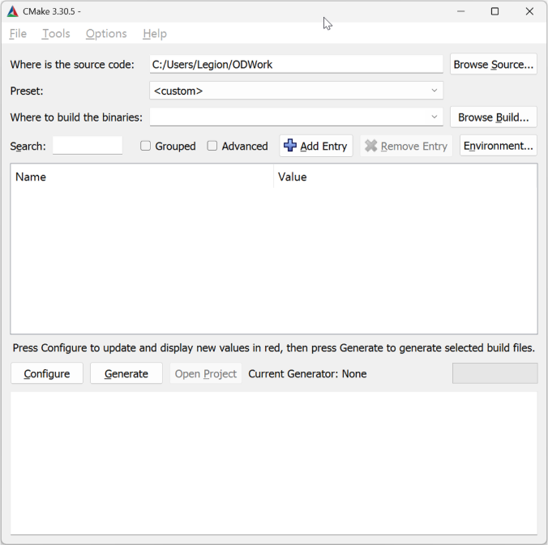
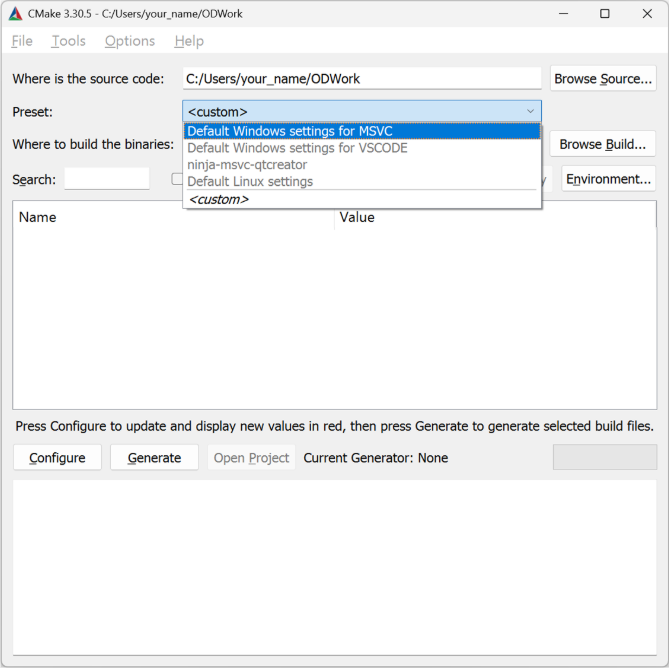
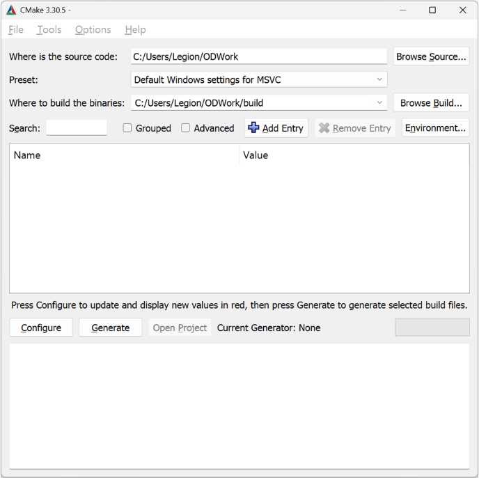
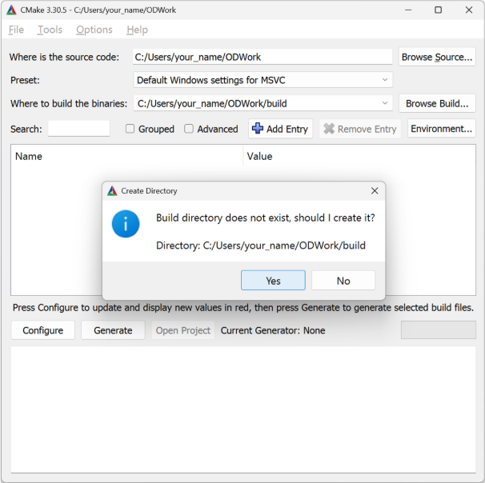
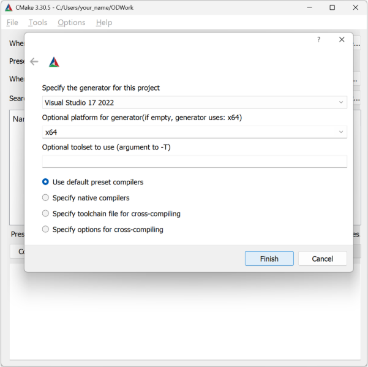
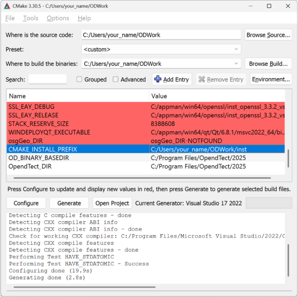

After creating the folder, run CMake-GUI. In the "Where is the source code" field, browse and select the directory you just created previously (e.g., C:/Users/your_name/ODWork).

In the “Preset” field, select “Default Windows settings for MSVC”, this preset is used for Microsoft Studio Code 2022 IDE.
Note that there are other preset options. However, these presets are not used directly using CMake-GUI. “Default Windows settings for VSCODE” is used for Visual Studio, “ninja-msvc-qtcreator” is used for QT Creator IDE, and “Default Linux settings” is used for Linux operating systems.

After selecting the “Define Windows settings for MSVC” preset. The “Where to build the binaries” will be automatically filled.

Then click Configure. An information window will appear, asking for permission to create a build directory. Click Yes.

Select Visual Studio 17 2022 as the generator and choose x64 as the platform. Click Finish.

CMake will automatically start the configuration process. Once completed, CMake-GUI will display a list of variables with “Name” and “Value” fields automatically filled in. Pay attention to the following variables:
CMAKE_INSTALL_PREFIX
OD_BINARY_BASEDIR
OpendTect_DIR
Ensure that these variables point to the correct paths. The values of OD_BINARY_BASEDIR and OpendTect_DIR should be the same when using an official installation of OpendTect, as opposed to a rebuilt SDK. As a result in most cases their values should not be changed.

Then click Generate. If everything is successful, you can click Open Project. Microsoft Visual Studio will automatically open the project solution.
For a more in depth view of the code in the tutorial plugin, please review Chapter 3 of this manual, this chapter will continue with ways to debug and install a plugin.